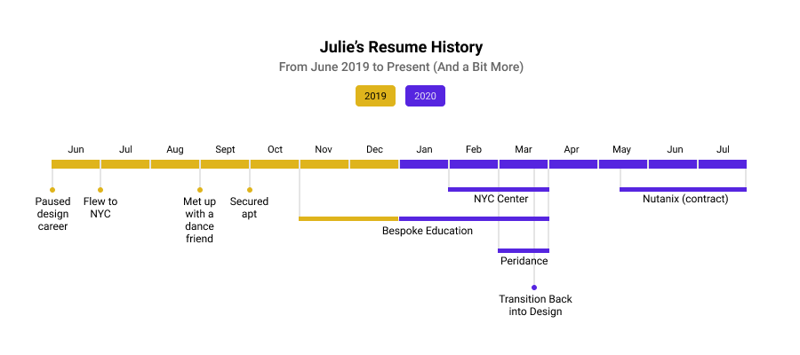
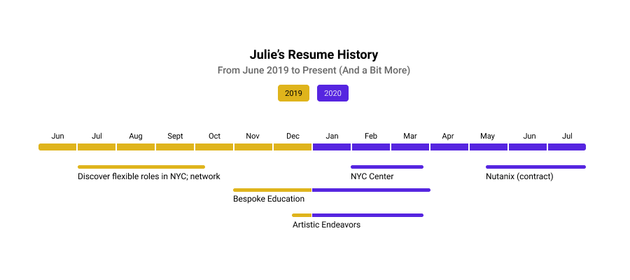
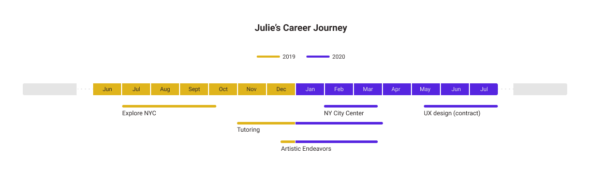
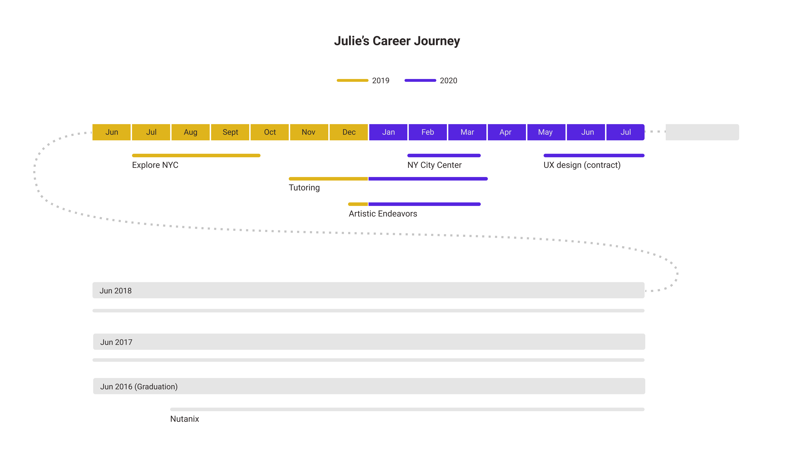

Visual Design
Individual Side Project
I decided to create a fun visual version of my resume's experience section. I used Figma to create the wireframes and final mockup.
Final Version
In the final version, I combined elements from all past explorations. I chose a deep shade of magenta to represent my design experience because I love design and magenta emotes a feeling of care infused with energy. For my artistic endeavors, I chose a goldenrod shade because I wanted to convey a sense of casual fun. I'm not wholly satisfied with the visual design of the dark grey text on light grey background

Design Process
Exploration 1
In the first version, I chose a linear timeline to convey the notion of one year. A calendar depiction would be overkill for the simplicity I wanted to achieve. At first, I thought that it would be useful to include specific points along the journey that served as milestones, but later, I would realize that this, too, was overkill for a simple design. I used color mainly to differentiate between the two different years. The specific shade/hue was not of concern to me at this stage.
Exploration 2
Based on Tuft's data-ink ratio for better chart readability, I removed the grey lines I had originally included in the first wireframe. I rounded the borders to radiate a less serious feeling. I also replaced the distinct data points with a rough, estimated continuous representation. Knowing my audience, which are people who are looking at my resume for experience and skills, the specific journey points weren't of the highest importance and can either be later explained or, if this were in a software product, explained in an interactive hover tooltip.
Exploration 3
In my third exploration, I wanted to give context to where this piece of my journey fit into the larger whole of my experience. I needed to provide context of what happened before and provide a visual clue that there will be more to come. Adding the grey segments to the left and right were an initial attempt, but without any explanations, the meaning of the grey segments are lost.
Exploration 4
In exploration four, I built upon what I had added in exploration three, which was to expand upon the past in terms of where this gap fit into the wider context of my experience skillset. Visually, people are great at comparing lengths, and I wanted the viewer to understand the relationship between the length of time to the activities done during that time. I knew that the experiences I've had in the past had to also be portrayed on the same time scale as the year-long gap was. Thus, I created three new rows to account for my design experience at Nutanix.
